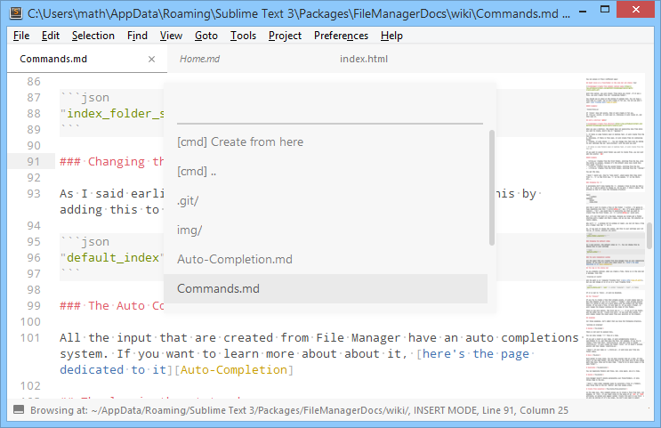

Commands
This page will list every command available and explain what they do with every single options.
Common features¶
Because FileManager uses an API, you'll always get those following feature in every input panel that is shown by FileManager.
The Auto Completion system¶
All the input that are created from File Manager have an auto completions system. If you want to learn more about about it, here's the page dedicated to it
The log in the status bar¶
As you probably noticed, when you create a file, there is in the side bar a message, like this
Creating at <path>
Note
Of course, the the Creating will change if you're moving, renaming, duplicating etc.
And the path is in a computer friendly form (more info), but you can change it so that it is in a user friendly form.
"log_in_status_bar": "user"
The valid values are "computer", "user" and false
If it is set to false, it will be disabled (there will be no log in the status bar)
The "browser"¶
If you try to create a file that already exists, it will simply open it.
Note
This is a trick that I realised I was using very often! It's even better when you use aliases
But what happens if you try to create a folder that already exists? Well it's going to show up a quick panel with every folders and every files listed. If you pick a file, it will open it. If you pick a folder, it will reopen the browser listing all the items of this folder.
There is two more options. The first one is .., to go up of one folder, and the other one is:
Create form here. If you pick this option, it will simply reopen the input panel from your
position in the browser.

So, again, this is just theory. Read on discover the different commands that uses those features
(and, of course, add their own  )
)
Create¶
Command: fm_create
You can access it from 2 different ways:
Right click on a file/folder in the side bar and choose New¶

With this option, you will create from where you click. If it was a file, you will create from its containing folder.
You should see an input at the bottom of sublime text. You can type a file name or a path, and it will create it for you. You can use what I call user friendly path
Example¶
folder/file.py
If folder does not exists, then it will create it for you.
If file.py exists, it will open it, otherwise it will create it, and then open it.
With a shortcut alt+n¶

When you use a shortcut, the plugin does not explicitly know from where you want to create. Here's how it guesses:
- If there is some folders open in Sublime Text, it will create from the top one
- Otherwise, if there is file open, it will create from its containing folder
- Finally, it will choose
~. You can change this fall back by adding to your settings the keypath_fallbackwith the path you want
If there is some folders open in Sublime Text, it will create from the top one
If you want to select which folder you want to create from, you can just add this prefix: nb>
Example¶
0>file.pyCreates from the first folder, starting from the top. Here the prefix is useless, because it's the default value (you could have just typedfile.py)1>file.pyCreates from the second folder, starting from the top-1>file.pyCreates from the first folder, starting from the bottom
You get the idea.
Note
Watch out, they're "code lists", which means that they start from 0. 0 is the first one,
1 is the second, 2 is the third, etc...
Changing the symbol (>)¶
I personally don't like typing the >, because I have to move my hand a looooong way  . So,
I added an option to change it. For my part, I chose a space. The only "problem" is that if I have
the following structure:
. So,
I added an option to change it. For my part, I chose a space. The only "problem" is that if I have
the following structure:
test/
1 python/
samples/
hello/
index.html
And that I want to create a file in the folder 1 python, I'm going to type something line this
1 python/afile.py. But, it's going select in samples. So, you would have to explicitly say
that you want to create from the first folder, so: 0 1 python/afile.py would work.
But, it's not that much of a big deal, because you rarely get a folder starting with a number and then a space, and as you saw, the solution is really simple.
Why isn't > a problem too? On Windows at least, you can not have a file are a folder that has
> in it.
So, if you want to change the symbol, add this to your settings user (it can be, of course, whatever you want):
"index_folder_separator": " "
Changing the default index¶
As I said earlier, the default index is 0. You can change this by adding this to your settings
"default_index": 1
Templates¶
You can specify templates so that when you create a new file, the content will be the content of your template. For more information, see the page dedicated to the templates
Rename¶
Command: fm_rename
You can only rename 1 file at a time.
If you put a slash in your name, it will automatically create a sub-folders to it, and then move
the file. For example, if you try to rename a file like this: hello/world.py and your file is
called something.py, it will create the folder hello (if it doesn't already exists) and then
rename something.py.
Tip
If your name is ../hello.py, it will move your file one folder above.
Move¶
Command: fm_move
You can move several items at a time. If they aren't in the same folder, the path shown in the input will be the common path they have. Once you'll move them, they'll be in every cases in the same folder.
To move a file, you're oblige to use the browser, because you have to choose an existing folder, so
it will automatically pop up. But if you have a look, instead of having [cmd]: Create from here,
you have [cmd]: move here. As you probably guessed, you have to select this option to move your
file/folder
Duplicate¶
Command: fm_duplicate
You can duplicate folders and files, but, once again, one at a time.
Delete¶
Command: fm_delete
File Manager doesn't delete permanently your files/folders, it only throws them to the trash.
Note
When other commands needs to overwrite a file or a folders, they throw them to the trash before and then simply write.
Create from selection¶
Command: fm_create_from_selection
As its name says, this command allows you to create a file from text. For example, in html, if
you right click on the value of an src or href attribute, an option will appear called
Create <the path to you file> (it will be shorten if it's too long). You don't even need to
select anything.
If you do select something, then it will propose you to create the file using the path you've selected.
Here's an example:

Font: Droid Sans Mono; Theme: Boxy; Color Scheme: Boxy Yesterday
In every cases, the file will be created from the current file (so this command does not appear if you're file is not saved on the disk).
Note
This automatic selection only works, for now, in the following languages:
- html
- python
- php
- javascript
- ruby
If you'd like to see an other language supported, feel free to submit a [new issue][], or even to create it yourself. Please make sure you read the contribution-guide before doing so.
Open in browser¶
Command: fm_open_in_browser
This command opens up the selected file in the default browser. You can run it from the command
palette: File Manager: Open In Browser, it'll open the current file. You can also run it from the
Side Bar: it'll open the selected file(s).
It also kind of overwrites the default Open in browser option in the context menu (in fact, it
hides default command, and shows the FileManager's command). Now, you might be wondering:
Why do an other command, while an other one exists?
Well, this one is better . Here's how: it takes into account a global setting url
An example's a great way to explain how it works (in MyProject.sublime-project):
{ "folders": [ { "path": "C:/wamp/www/MyAwesomeWebsite/" } ], "settings": { "url": "http://localhost/MyAwesomeWebsite/" } }
Now, when you're going to open a file that is in the the folder C:/wamp/www/MyAwesomeWebsite/,
it'll simply replace this part with the url value (here http://localhost/MyAwesomeWebsite/)
Examples¶
C:/wamp/www/MyAwesomeWebsite/index.html→http://localhost/MyAwesomeWebsite/(it's clever, it removes theindex.html)C:/wamp/www/MyAwesomeWebsite/index.php→http://localhost/MyAwesomeWebsite/C:/wamp/www/MyAwesomeWebsite/sub-folder/file.php→http://localhost/MyAwesomeWebsite/sub-folder/file.php
Open Terminal Here¶
Command: fm_open_terminal
It opens up the terminal in the selected folder (or the folder of the current file if you open it from the command palette). You can configure what's happening in your FileManager's settings (Preferences → Packages Settings → FileManager).
You can add a setting called terminals. Here's the format:
{ "terminals": [ { "name": "terminal name", "cmd": ["the", "command", "to", "open"] }, { "name": "An other Terminal", "cmd": ["terminal", "--new_tab", "$cwd"] } ] }
In the cmd key, you have one variable: $cwd. It'll be replaced by the current working dir
(the folder from which the command will be run).
So, for example, on Windows, here's what you could do:
{ "terminals": [ { "name": "Cmder", "cmd": ["C:/cmder/cmder.exe", "/SINGLE", "$cwd"] }, { "name": "CMD", "cmd": ["cmd"] } ] }
If you don't know what Cmder is, I recommend having a look, it's pretty cool. (for Windows user)
On other platform¶
If you're on Mac, it might be a bit harder. Why? Because I don't have a Mac, so I cannot try to see if what I'm going to tell you is actually working. Here's what I found:
open -a Terminal should open a new terminal. So, here's the config I'd recommend using:
{ "terminals": [ { "name": "Terminal", "cmd": ["open", "-a", "Terminal"] } ] }
If it does, doesn't and you have a solution, or needs improvement, please let me know by raising an issue
Tip
If none of these works for you, and you don't know how to configure this, you can always use Will Bond's package Terminal and hide this option (open terminal here)
Open In Explorer¶
Command: fm_open_in_explorer
This command simply opens the selected item(s) in your file explorer (or finder if you're on mac). It'll open the current file if it's run from the command palette.